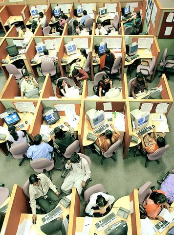
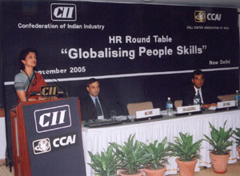
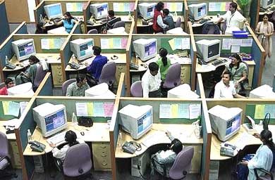
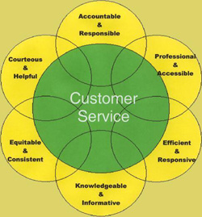
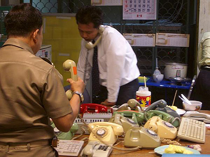

|
 Indian Call CentersTelegenisys India Pvt. Ltd. specializes in "business process outsourcing" for medium-sized companies worldwide, and they boast a singular vision -- to one day achieve the SEVEN F'S of customer service. In no particular order, these f-words are Focused, Fast, Flexible, Friendly, Fair, Futuristic and First Class! Business process outsourcing is a euphemism for lowballing bids on jobs like engineering, tech support, customer service or animation, and setting up "call centers" in countries like India, China, Egypt, and the Philippines. Apart from movies and television, America's premiere exports are overindulgence, depression, premature death and regime change. There's no better way than to enjoy all of the above than working in an overpopulated Indian call center. India, crowned by businesses around the globe as the world's back office, employs 350,000 people in the outsourcing industry each year, adding 150,000 new jobs every twelve months. Just imagine them all stuffed in one single cubicle clonking phones together and you begin to approximate the sensation. The average call center can house fifteen hundred 20-year-old Indian technology graduates.
Because of the time difference between India and the United States, Indian employees work graveyard shifts, arriving at the office in the early evening (6:30pm) and returning home shortly before dawn (3:30am). The adjustment to such odd hours is hitting India hard, and carrying with it a host of health problems: digestive disease, hair loss, back pain and stress to name just a few. An estimated 50,000 young English-speaking Indians have already been exposed to the phenomenon of accent stress.
Have you ever tried faking an English accent for eight to ten hours a day? What a pain in the ass. You get a sore throat that never heals. Crowded offices populated with hundreds of equally sick individuals merely exacerbates the situation. Some girls develop menstrual problems. Orthopedic distress and chain-smoking are other common symptoms. Many India call center employees find it difficult to have a positive outlook towards life when they can't even get a good night's sleep. Employees deal with an average of one hundred phone calls per shift -- more if their excitable manager is feeling "pumped up" for some reason. Study these pictures of Indian call centers closely: these are not cuddly, friendly, operator-in-command studios in the traditional sense. Look at the top of every single computer monitor, where nobody has lined up collectable figurines from Pixar's The Incredibles. Where are the Dilbert mugs, the cat calendars, the bowls of candy pushed forth to foster friendship and camaraderie among employees? Okay, very well: where are the Bollywood posters, the curry forks, the belly-dancing platforms? Sometimes there's a banner on the call-center floor: WEAR YOUR BEST SMILE AND MAKE YOUR CUSTOMER SMILE TOO! The quality of life in India, despite the lack of material comforts and amenities, is rich in religion, family, and human relationships -- none of which matter two shits when you're troubleshooting someone's Photoshop serial number halfway around the world, or helping some fat lady in Alabama figure out why her debit card won't come out of the ATM machine. The moment your shift is over, your chair gets warmed by another representative ("rep") ready to take over where you left off. The rep's job is complex, to say the least. Chances are he'll be talking to someone as ignorant about India as he or she might be about America. Customer: How come every time I call Verizon Wireless I get some black dude who can't speak proper English? Would you say you're more from the hood or more from the ghetto? Employee: Sir. I'm willing to help you conduct this transaction, provided you don't make any further comments like that about my background. Otherwise I'm going to have to end this conversation. Customer: Faggot. [hangs up] One of the worst things you can do while trying to navigate a call center is to make a racist remark or a negative comment insulting an Indian rep's ancestry, heritage or skin color. When confronted with such a volatile situation, the rep will have no choice but to flip open the chapter on "setting boundaries for the conversation," and proceed accordingly. His or her voice will drop down to neutral or matter-of-fact tones, showing as little emotional reaction as possible, in the hopes your anger doesn't escalate. The rep's job is to help you subscribe to the Playboy channel, not to make you a better human being. The reverse racism scenario is equally worthy of study: what does a rep do when the caller believes he or she is a target of racism? Let's watch one of the most offensive (and effective) verbal strategies you as a customer can pull: Customer: I asked you twice now already: can I get the chamois crib covers in bronzeberry frost and periwinkle or do I have to take my business to Ikea? Employee: I do believe we have those colors in stock. One "sec" while I check the figures. Customer: Woah -- did you just call me and my family a bunch of niggers? In this scenario, the rep will have no choice but to indirectly acknowledge the racist accusation with a neutral observational remark such as it sounds like you're pretty frustrated. Without so much as a pause, the rep will then U-turn the conversation back to the bronzeberry and periwinkle matters at hand. By delivering empathy statements which properly identify your feelings of frustration, and immediately following them up with choices of appeal which a customer can embrace, refuse, or ignore, the Indian rep can avoid further intimidation. However, responding positively is not always sufficient. The customer can repeat the accusation, even going so far as to suggest everyone in the company is "out to get" a particular race. This is where even experienced reps can choke: these remarks must be treated more seriously than other insinuations. If the situation cannot be sufficiently diffused, the customer might bring his case to the media -- who in turn will play endlessly looped recordings of the rep's technique, reflecting poorly upon the whole call center. In such an event, a company's best public relations maneuver is to fire that rep -- or the entire call center -- in response to a news story that just won't die, thereby exorcising "troublemakers from within" without once examining mitigating circumstances. Companies can be somewhat reluctant to evangelize the number of outsource employees answering phones ten thousand light years away. It is a multicultural world, and nobody understands each other. A rep's self-control is critical at racist junctures (however unfair or unjustified the accusations) and the same holds true for sexism. Both men and women can be victims of sexist comments, but Indian women are more likely to be targets, particularly when the subject of the call involves computers, mathematics, construction, or machinery. In this example, the customer is a male and the employee is a female. Customer: Not to be rude, but in my experience women just aren't that knowledgeable about auto repair. I'd be way more comfortable discussing all this with a man. Employee: I understand. The thing is, if you want your car fixed today, I'm the only person available. So it's up to you what you want to do. I'm happy to discuss the problem with your car so we can get it fixed before the weekend. Customer: How about I come down there and shave off your tits with a cheese grater? Again the rep must avoid being "drawn in" to an argument about a woman's natural abilities in the auto shop. While sexist remarks can be insulting and demeaning, it's imperative that the female rep not take the bait. Instead, she must briefly reassure the male customer of her experience and skill and then immediately refocus the conversation back to the customer's car. Unfortunately in this instance, the caller chose to respond with another sexist comment: the implication that a woman without breasts would be an acceptable alternative to a male mechanic. The caller might also have requested some "customer cervix". Call center employees are trained to understand that a customer's fit of pique surfaces for one of two reasons. The anger can be a byproduct of the company, product or service in question -- or it can arise from personal matters completely unrelated to the rep. One such "unrelated" form of anger involves the caller's past negative experiences with vaguely similar agencies. Callers to a government institution, for instance, may approach the act of speaking to a rep with only disdain, factoring in a lifetime of perceived injustices, exasperation and defeat.  Customer: It's the fourth building permit I've had trouble with this year! This is the last goddamn time -- I want someone to use his fuckin' brains and tell me which -- which -- goddamn form I'm supposed to fill out, and where I'm supposed to take it or send it. Jesus! Employee: Well you do seem frustrated and it certainly sounds like you want to get these permits approved as quickly as possible. It's true, that some people can get impatient with the process, and I certainly apologize for any time delays you've experienced. I know you've done much of the planning, and you have all your information ready. Let's get right to it. Customer: [Gunshot, phone clatters to floor] Callers become "difficult" when they feel their expectations have not been met, but our fearless Indian rep attempted the most logical course of action: she communicated an awareness of "where the customer is coming from". Hey man, I'm hip to your vibe; this life we endure -- how strange, yet how jolly; etcetera. We're all in it together, kid. This faux familiarity (fauxmiliarity, n.) must be delivered with complete neutrality, neither agreeing nor disagreeing with the caller, and certainly not dwelling on old stuff. Time-traveling is a strategy widely employed by call centers: the rep puts callers in a Wonka-style time machine, transporting them from the past into the present, with promises of four-star customer accommodation in the future. Anger management is a challenge in any culture. If the callers' connections are free of line noise and their wireless phones are adequately filtering out unwanted background sound, there are only three communication barriers which threaten reps: foreign language customers, callers with impenetrable accents, and customers with speech disabilities. Customer: [unintelligible] Employee: I'm sorry, I'm not sure I heard you correctly. Are you calling to apply for a Magic Moments Visa Rewards card? Customer: Me no rikey. You bad person. There can be only one common solution to these barriers. The customer service rep must try and try and try again to satisfy the customer's inquiry, under the mindful wiretapping of eavesdropping superiors. The Indian call center rep is a heavily-monitored surgeon performing delicate service operations, and all conversation must be reduced into shorter meta-sentences with periodic summarizations of the discussion so far. Employee: Okay, you don't like me, and I'm a bad person. Is that correct? Customer: [unintelligible] If untreated, anger inevitably leads to abuse. Customers are far more aggressive on the phone than in person. Not surprisingly, the take-this-job-and-please-to-shove-it rate is high in call centers in India, as thirty to forty percent of most workers quit within the first year. They are quickly replaced: English speaking youngsters in India are clamoring for jobs which pay anywhere from $160 to $300 per month. As India's outsourcing firms continue to grow, those in charge of hiring are starting to despair: the majority of young Indians they interview are growing just plain unemployable. Only one in ten graduates appears to be worth placing -- and as one frustrated Mumbai-based manager fumed to Satish Jacobs of ABC News: "Just look at their English!" Several letters in his hands held plaintive requests like, "As I am marrying my daughter, please grant a week's leave," and "I am well in here and I hope you are in the same well." Are you getting any closer to solving the mystery of why these workers only earn one dollar per hour? If India is unable to recruit workers at reasonable wages, they lose orders to Thailand, China, and the Philippines. Meanwhile, disgruntled Americans and British workers whose jobs have been outsourced can easily get them back -- if they're willing to move to India where their English accents and down-home colloquialisms might be a distinct advantage, and if they're willing to work for an Indian wage. And while you're over there, please do not offer their God a peanut. |
 When a business in the United States hands over all its call center jobs
to workers in India, it means that young Indians will be on the telephone
with you a great deal: answering your customer service questions, troubleshooting
your software problems and assisting you with credit card inquiries from thousands
of miles away. Similar outsourcing corporations exist here in America, but
the majority of jobs go to domestic incarcerated prisoners.
When a business in the United States hands over all its call center jobs
to workers in India, it means that young Indians will be on the telephone
with you a great deal: answering your customer service questions, troubleshooting
your software problems and assisting you with credit card inquiries from thousands
of miles away. Similar outsourcing corporations exist here in America, but
the majority of jobs go to domestic incarcerated prisoners. In hundreds of classrooms across
India, instructors from as far away as the University of Pennsylvania's Wharton
School of Business and Britain's Oxford University have set up workshops which
serve to neutralize an Indian's accent before he or she ever touches a telephone.
It can take weeks to teach someone how to "flatten out" their Indian
intonations, to pronounce Pottery Barn more like Poddery
Barn. Accent-neutralization classes incorporate a whole toolbox of geography
lessons, regional dialects, and shorthand introductions to American culture
-- including holidays and baseball scores. Some Indians are asked to act out
Western fairy tales, perform Shakespeare, and examine popular caricatures of
Indians like Apu from The Simpsons.
In hundreds of classrooms across
India, instructors from as far away as the University of Pennsylvania's Wharton
School of Business and Britain's Oxford University have set up workshops which
serve to neutralize an Indian's accent before he or she ever touches a telephone.
It can take weeks to teach someone how to "flatten out" their Indian
intonations, to pronounce Pottery Barn more like Poddery
Barn. Accent-neutralization classes incorporate a whole toolbox of geography
lessons, regional dialects, and shorthand introductions to American culture
-- including holidays and baseball scores. Some Indians are asked to act out
Western fairy tales, perform Shakespeare, and examine popular caricatures of
Indians like Apu from The Simpsons.